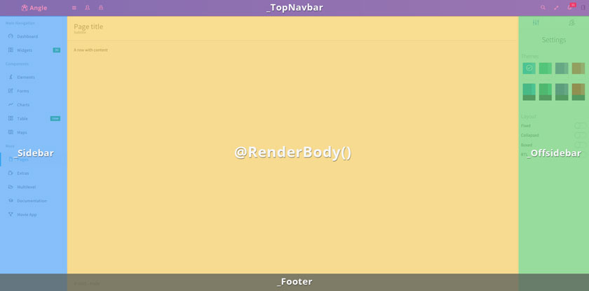
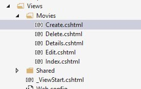
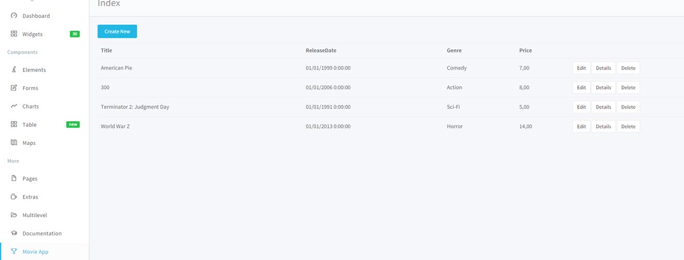

Angle
Bootstrap Admin App + MVC5 + jQuery
Overview
This document aims to explain the best way to work with the product and its components.
It assumes a minimum knowledge of Visual Studio 2013 and Asp.net technology.
All the best and enjoy coding.
Getting started
Tips
- Do not start from scratch, use an existing asset and modify it to learn how it works.
- Explore the sources for ideas and sample code.
- Use Firebug or Chrome Developer Tools to find bugs on your website. Using one of those tools will help you to save time analyzing the site and finding elements structure, like classes, id or tags
- Quick tip: open your site with Chrome, press F12 and go to console tab, reload your page and if something goes wrong you will see your page errors in red text.
- In case of error messages, someone might have seen it too, so you can try a Google search for a quick fix.
Starting the app
To run this version you need to have installed Visual Studio 2013. After that, open the file backend-mvc/Angle/Angle.sln. Once VS has been started, press F5 and it should build the project and open your default browser with the theme.
Structure
Before starting to customize the template, here are the project files organization structure:
+--Angle
+--Angle
| +--App_Data
| +--App_Start
| +--bin
| +--Content
| | +--app
| | | +--css
| | +--documentation
| | +--i18n
| | +--Images
| | +--Json
| +--Controllers
| +--fonts
| +--Helpers
| +--Models
| +--obj
| +--Properties
| +--Scripts
| | +--app
| | +--modules
| | +--demo
| +--Vendor
| +--Views
| +--Charts
| +--Dashboard
| +--Documentation
| +--Elements
| +--Extras
| +--Forms
| +--Maps
| +--Movies
| +--Multilevels
| +--Pages
| +--Shared
| +--Tables
| +--Widgets
+--packages
Layout
The theme uses two layouts. One for the app view and another for pages (externals to the app)
Angle/Views/Shared/_Layout.cshtml
This is the main layout
It's is organized like show the following image

Using this markup
<!DOCTYPE html>
<html lang="en">
<head>
<meta charset="utf-8">
<meta name="viewport" content="width=device-width, initial-scale=1, maximum-scale=1">
<meta name="description" content="Bootstrap Admin App + jQuery">
<meta name="keywords" content="app, responsive, jquery, bootstrap, dashboard, admin">
<title>Angle - Bootstrap Admin Template</title>
<!-- =============== VENDOR STYLES ===============-->
@Styles.Render("~/bundles/fontawesome")
@Styles.Render("~/bundles/simpleLineIcons")
@Styles.Render("~/bundles/animatecss")
@Styles.Render("~/bundles/whirl")
<!-- =============== PAGE VENDOR STYLES =============== -->
@if (IsSectionDefined("Styles"))
{@RenderSection("Styles", required: false)}
<!-- =============== BOOTSTRAP STYLES ===============-->
<link href="@Styles.Url("~/Content/app/css/bootstrap.css")" rel="stylesheet" type="text/css" id="bscss" />
<!-- =============== APP STYLES ===============-->
<link href="@Styles.Url("~/Content/app/css/app.css")" rel="stylesheet" type="text/css" id="maincss" />
</head>
<body>
<div class="wrapper">
<!-- top navbar-->
<header class="topnavbar-wrapper">
@Html.Partial("_TopNavbar")
</header>
<!-- sidebar-->
<aside class="aside">
@Html.Partial("_Sidebar")
</aside>
<!-- offsidebar-->
<aside class="offsidebar">
@Html.Partial("_Offsidebar")
</aside>
<!-- Main section-->
<section>
<!-- Page content-->
<div class="content-wrapper">
@RenderBody()
</div>
</section>
<!-- Page footer-->
<footer>
@Html.Partial("_Footer")
</footer>
</div>
@if (IsSectionDefined("BodyArea"))
{@RenderSection("BodyArea", required: false)}
<!-- =============== VENDOR SCRIPTS ===============-->
@Scripts.Render("~/bundles/modernizr")
@Scripts.Render("~/bundles/jquery")
@Scripts.Render("~/bundles/bootstrap")
@Scripts.Render("~/bundles/storage")
@Scripts.Render("~/bundles/jquery.easing")
@Scripts.Render("~/bundles/animo")
@Scripts.Render("~/bundles/slimscroll")
@Scripts.Render("~/bundles/screenfull")
@Scripts.Render("~/bundles/localize")
@Scripts.Render("~/bundles/demoRTL")
<!-- =============== PAGE VENDOR SCRIPTS ===============-->
@RenderSection("scripts", required: false)
<!-- =============== APP SCRIPTS ===============-->
@Scripts.Render("~/bundles/Angle")
</body>
</html>
Angle/Views/Shared/_LayoutPage.cshtml
This is the page layout. It only uses the @RenderBody() to include the page content within the main wrapper like show the following markup
<!DOCTYPE html>
<html lang="en">
<head>
<meta charset="utf-8">
<meta name="viewport" content="width=device-width, initial-scale=1, maximum-scale=1">
<meta name="description" content="Bootstrap Admin App + jQuery">
<meta name="keywords" content="app, responsive, jquery, bootstrap, dashboard, admin">
<title>Angle - Bootstrap Admin Template</title>
<!-- =============== VENDOR STYLES ===============-->
@Styles.Render("~/bundles/fontawesome")
@Styles.Render("~/bundles/simpleLineIcons")
<!-- =============== PAGE VENDOR STYLES =============== -->
@if (IsSectionDefined("Styles"))
{@RenderSection("Styles", required: false)}
<!-- =============== APP STYLES ===============-->
@Styles.Render("~/Content/css")
</head>
<body>
<div class="wrapper">
@RenderBody()
</div>
<div class="p-lg text-center">
<span>©</span>
<span>2015</span>
<span>-</span>
<span>Angle</span>
<br>
<span>Bootstrap Admin Template</span>
</div>
<!-- ============== VENDOR SCRIPTS ===============-->
@Scripts.Render("~/bundles/modernizr")
@Scripts.Render("~/bundles/jquery")
@Scripts.Render("~/bundles/bootstrap")
@Scripts.Render("~/bundles/storage")
@Scripts.Render("~/bundles/parsley")
<!-- =============== PAGE VENDOR SCRIPTS ===============-->
@RenderSection("scripts", required: false)
<!-- =============== APP SCRIPTS ===============-->
@Scripts.Render("~/bundles/Angle")
</body>
</html>
Movies App
The Movies app included only on MVC5 demo and seed project works with Entity Framework 6 on Visual Studio 2013 Using MVC, Entity Framework, and ASP.NET Scaffolding,
You can create a web application that provides an interface to an existing database table. This demo shows you how to automatically generate code that enables users to display, edit, create, and delete data that resides on the database. The generated code corresponds to the columns in the database table. This demo focuses on using ASP.NET Scaffolding to generate the controllers and views.
We have followed an excellent tutorial by João Eduardo Sousa by adding a few changes to the auto-generated view in order to match the expected markup. We have also copied some steps from the original tutorial to give you a quick reference
STEP1 - Create class
Add a new class to the project (this class represents a table, and the properties the colums of that table)
Give a name to that class (in my sample I call him MoviesModel)
On the class create the following code:
public class Movie
{
public int ID { get; set; }
public string Title { get; set; }
public DateTime ReleaseDate { get; set; }
public string Genre { get; set; }
public decimal Price { get; set; }
}
public class MovieDBContext : DbContext
{
public DbSet<Movie> Movies { get; set; }
}
Put the class inside the Models folders, just to organize your code.
Note that the class propertie ID is used as primary key
STEP2 - Create controller with views using Entity Framework
Add new Scaffolded to the project (new item existent on MVC5)

Choose option MVC5 Controller with views using Entity Framework

Click Add
If you receive an error, it may be because you did not build the project in the previous section. If so, try building the project, and then add the scaffolded item again.
After the code generation process is complete, you will see a new controller and views in your project.
STEP3 - Controller and Views Generation
a. You will see now the Controller was automatically created with CRUD operations
b. And the Views were also automatically created

STEP4 - Run the application

Seed Project
This project is an application skeleton. You can use it to quickly bootstrap your MVC5 webapp projects and dev environment for these projects.
The seed app doesn't do much and has most of the feature removed so you can add theme as per your needs just following the demo app examples.
The angular seed project includes the following features
- Modernizr
- Icons (FontAwesome and SimpleLine)
- Translation
- RTL mode
- Top navbar search form
- Themes
- Two views with its own sidebar entries (one single item and a menu)
- Empty offsidebar (left sidebar)